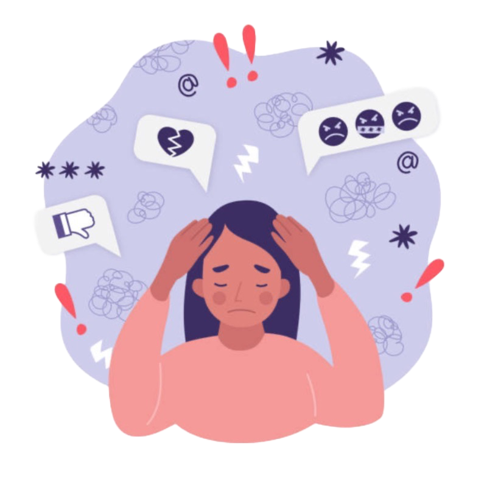

PTSD
Post-traumatic stress disorder (PTSD) is a mental health disorder that some people develop after they experience or see a traumatic event. The traumatic event may be life-threatening, such as combat, a natural disaster, a car accident, or sexual assault. But sometimes the event is not necessarily a dangerous one. For example, the sudden, unexpected death of a loved one can also cause PTSD.It's normal to feel afraid during and after a traumatic situation. The fear triggers a "fight-or-flight" response. This is your body's way of helping to protect itself from possible harm. It causes changes in your body such as the release of certain hormones and increases in alertness, blood pressure, heart rate, and breathing.
SYMPTOMS
Recurrent, unwanted distressing memories of the traumatic event
Self-destructive behaviour
Trying to avoid thinking or talking about the traumatic event
Feeling detached from family and friends
Feeling emotionally numb
TIPS
Focus on your breathing
Carry an object that reminds you of the present
Tell yourself that you are safe
Enjoy the peace of nature
Confide in a person you trust